용산구 3연동중문 수리 현장 서울 용산구 현장에서 3연동중문 수리를 진행했습니다. 문짝이 따로 움직인 원인 고객님 댁의 중문은 내부 벨트가 끊어지면서 문이 함께 움직이지 않고 각각 따로 열리는 상태였습니다. 3연동중문은 문짝이 따로 움직이는 구조가 아니라 레일, 벨트, 댐퍼가 맞물려 움직여야 하기 때문에 한 부품만 문제처...
이번 작업의 확인 포인트
문짝 움직임과 레일, 벨트, 롤러, 댐퍼의 연결 상태를 함께 확인하고 필요한 부속을 교체한 뒤 작동감을 조정합니다.

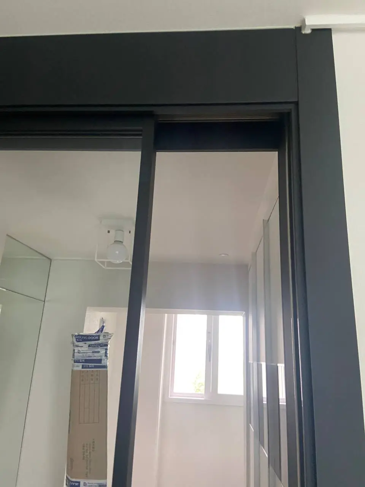
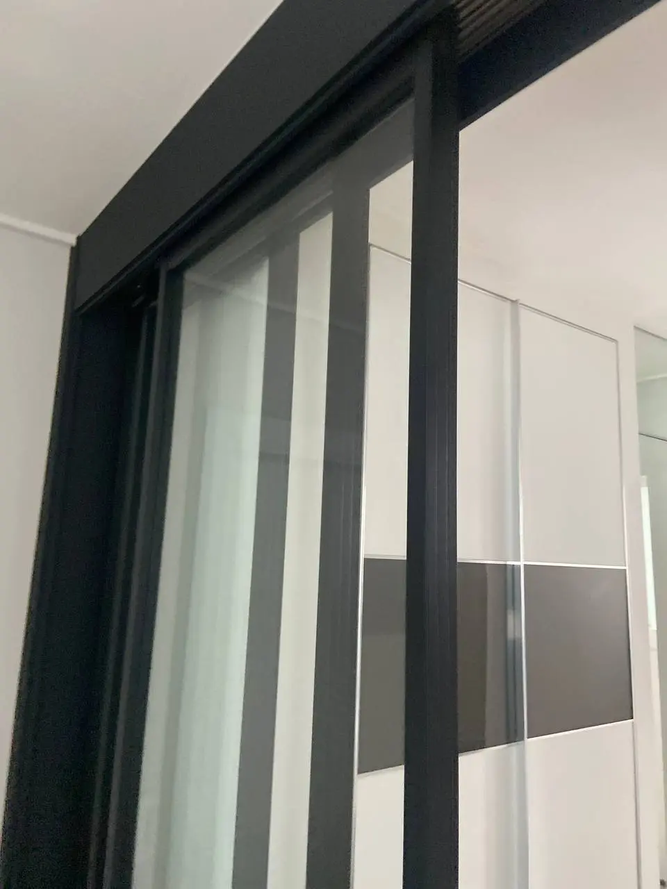
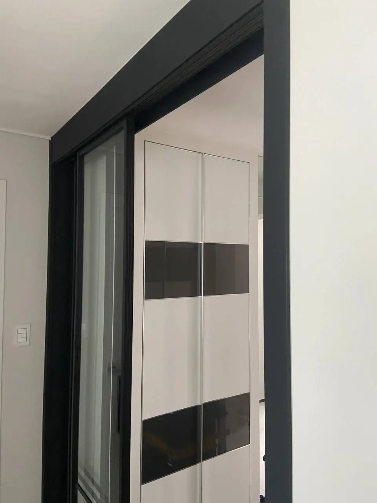
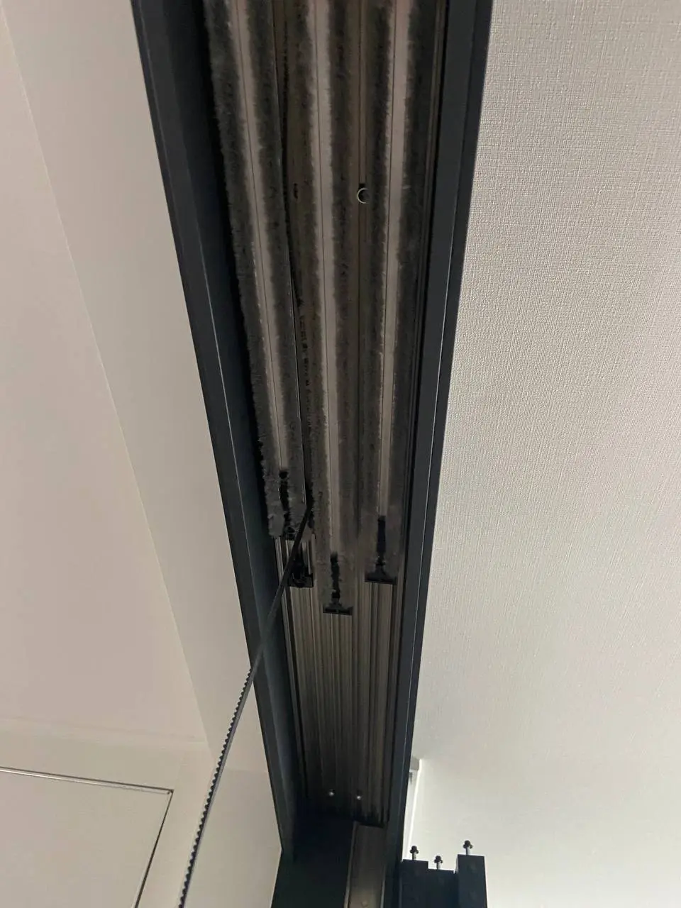
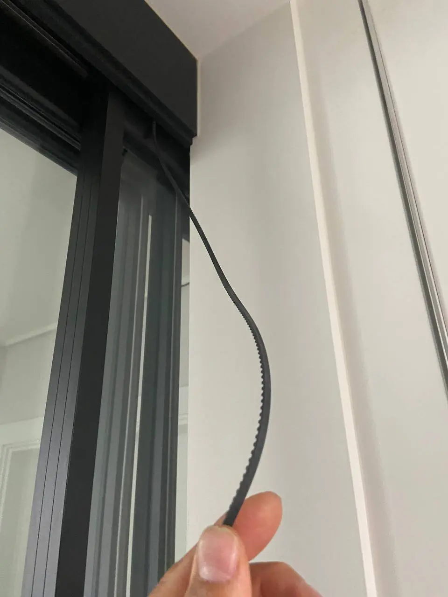
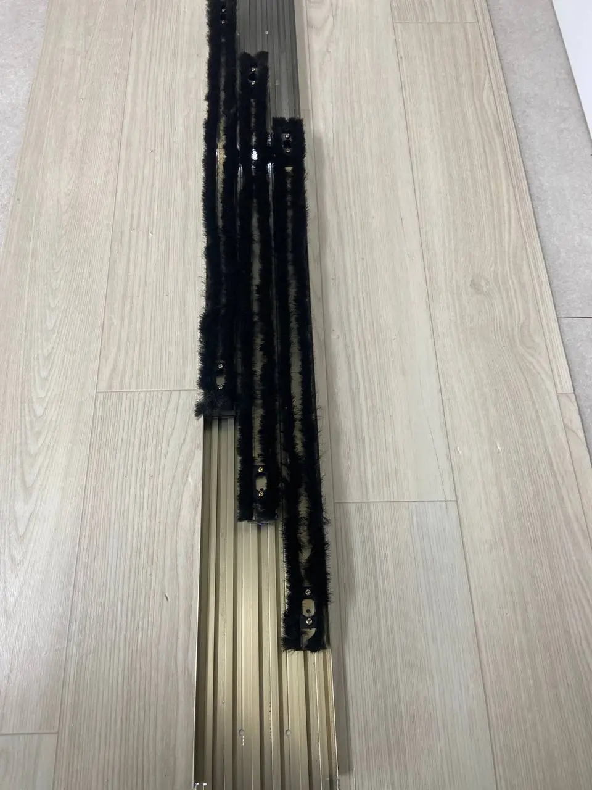
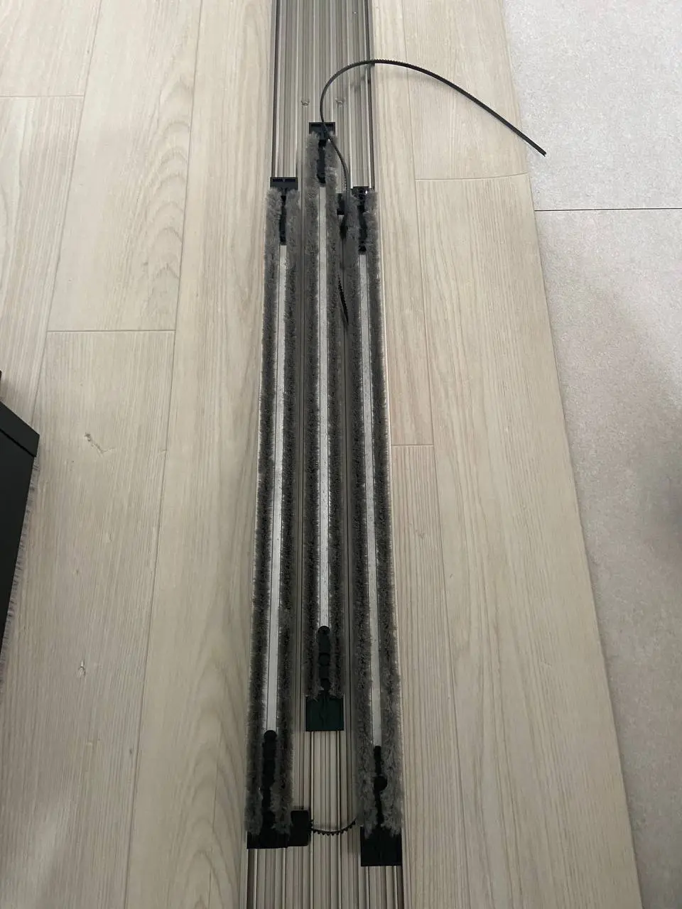
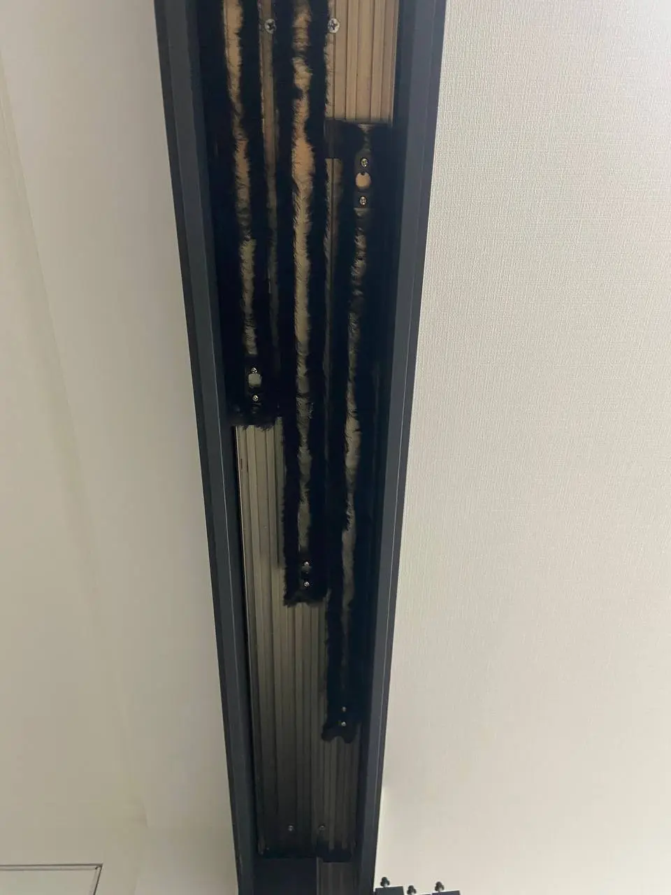
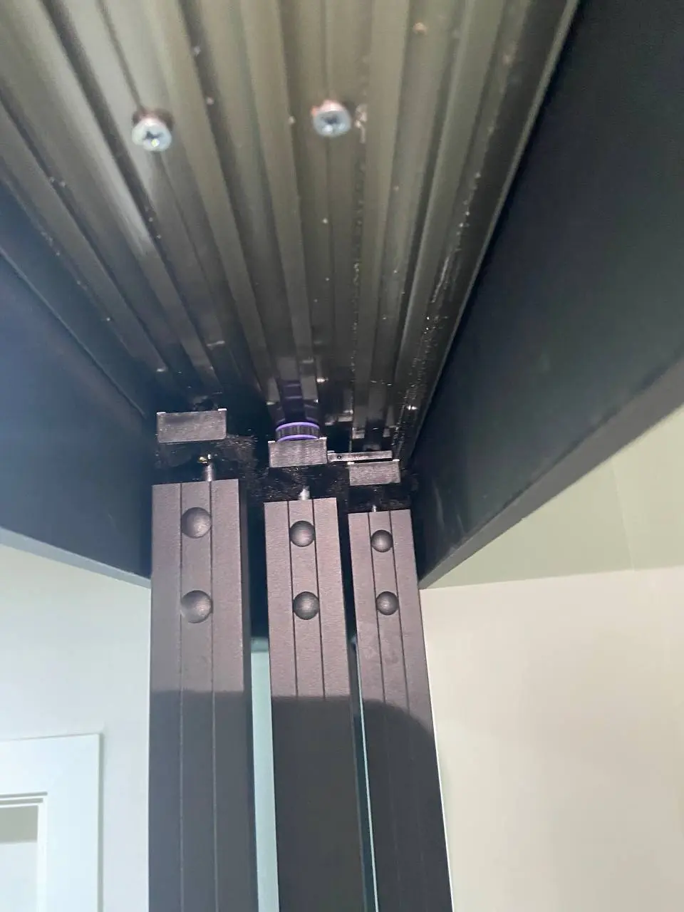
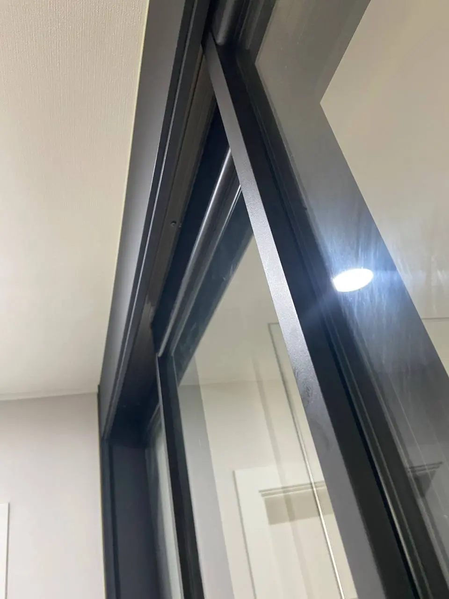
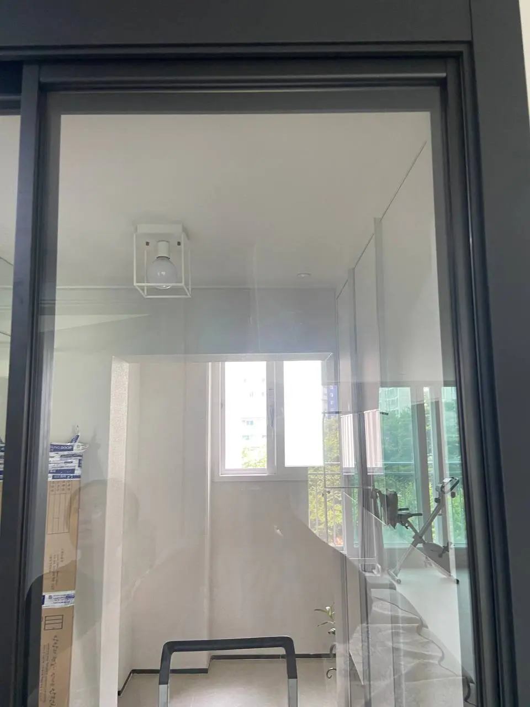
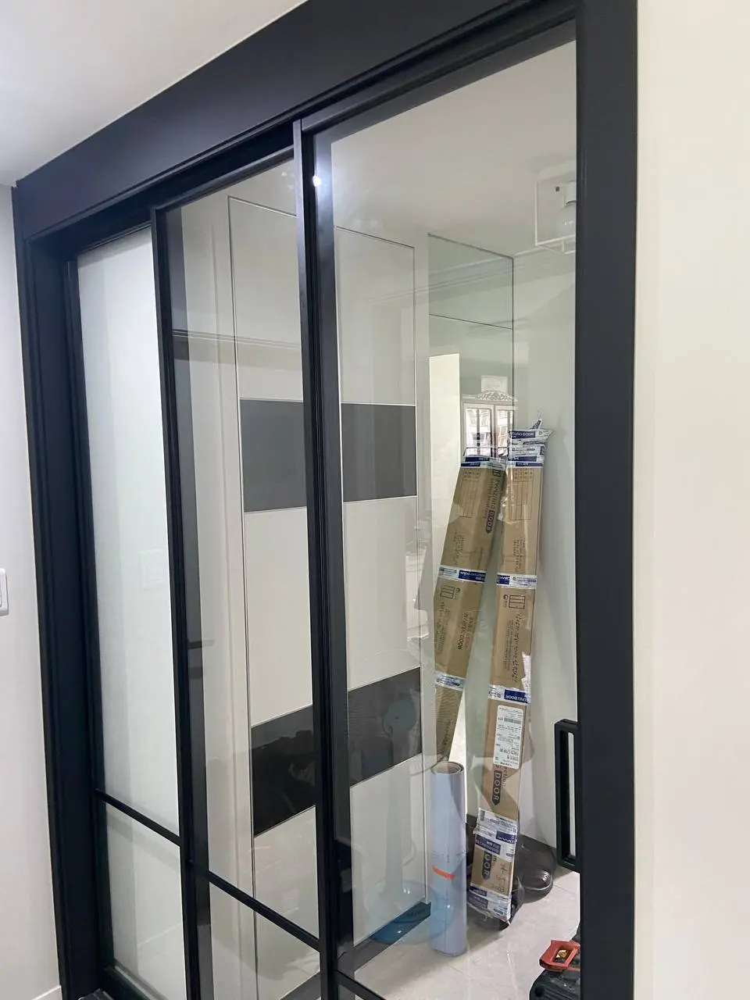
용산구 3연동중문 수리 현장
서울 용산구 현장에서 3연동중문 수리를 진행했습니다.
문짝이 따로 움직인 원인
고객님 댁의 중문은 내부 벨트가 끊어지면서 문이 함께 움직이지 않고 각각 따로 열리는 상태였습니다. 3연동중문은 문짝이 따로 움직이는 구조가 아니라 레일, 벨트, 댐퍼가 맞물려 움직여야 하기 때문에 한 부품만 문제처럼 보여도 전체 작동 상태를 함께 확인해야 합니다.
레일·벨트·댐퍼 점검과 교체
현장에서는 먼저 문짝의 움직임과 상부 레일 상태를 확인했습니다. 이후 손상된 벨트와 관련 부품을 분리하고, 레일과 댐퍼를 세트로 교체해 문이 다시 부드럽게 연동되도록 조정했습니다.
수리를 미루지 않는 것이 좋은 증상
중문이 무겁게 움직이거나, 한쪽 문만 따로 밀리거나, 닫힐 때 충격이 커졌다면 부품 마모가 진행 중일 수 있습니다. 그대로 사용하면 레일이나 문짝에 추가 손상이 생길 수 있어 빠르게 점검하는 것이 좋습니다.
사진과 영상 상담 안내
세븐홈케어는 중문 수리처럼 생활 공간에서 바로 불편함이 생기는 작업도 현장 구조에 맞춰 처리합니다. 3연동중문, 슬라이딩문, 레일, 댐퍼 관련 문제가 있으면 사진이나 영상을 보내주세요.
3연동중문은 벨트만 새것으로 바꿔도 레일이나 댐퍼 정렬이 맞지 않으면 문짝이 다시 무겁게 움직일 수 있어 교체 후 연동과 닫힘 속도를 함께 확인해야 합니다.
문의할 때는 문 전체가 보이는 사진, 상부 레일과 고장 부위 사진, 문을 여닫을 때의 짧은 영상을 보내주시면 필요한 부품과 점검 범위를 더 빠르게 안내할 수 있습니다.